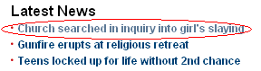

リンクタグをCSSでブログカスタマイズ
今日のブログカスタマイズは、リンクタグの色彩をスタイルシートの a:hover や a:visited を使ってカスタマイズしようと思います。
訪問したことのあるリンクの色が変わるとか、リンクタグにカーソルを合わせると浮き上がるとかのCSSですが、訪問したことのあるリンク(a:visited)を何色にすればいいのかが若干難しかったりです。
リンクタグ a:hover や a:visited の CSS
リンクタグをカスタマイズする際のスタイルシートですが、訪問前後で色彩が変わるとか、リンクにポインタをのせると色が変わるとかの設定を指定するといいみたいです。
リンクの文字色を指定する - TAG indexを参照してみますと、４種類ぐらい設定するのが一般的なようです。
- a:link { color: #カラーコード; } - 未訪問のリンク
- a:visited { color: #カラーコード; } - 訪問済みリンク
- a:hover { color: #カラーコード; } - ポイント時のリンク
- a:active { color: #カラーコード; } - 選択中のリンク
ちなみに、CSS記入時はこの順番でないと機能しない場合もあるようです。
このなかで、a:active というのがよくわかんないんですが、たぶん、リンクをクリックした瞬間の色彩？のことだろうと思うんで、設定してもあんまし意味ないんじゃないかなって気もします。
未訪問の a:link はデフォルトでたいていは設定されているので、a:visited と a:hover だけでも追加すれば、ブログの印象も若干違ってくるはずです。
オーソドックスな a:visited と a:hover リンク
この a:visited と a:hover のリンクですが、ポイントをのせた時の a:hover の場合は、たいていアンダーラインが浮き上がるような設定になっているケースが多いようです。
ポイントをのせた時にアンダーラインが付く a:hover のスタイルシート設定はこんな感じです。
a:hover {
color: #003366;
text-decoration:underline;
}
これは、リンクの装飾(text-decoration)をアンダーライン(underline)でお願いしますって意味だと思います。color: #003366; の部分は色彩で、この数字の場合は青になります。
次に訪問済みリンクの a:visited の場合ですが、日本のニュースサイトでみてみると、たいていは訪問前が青、訪問後を紫の設定に指定しているケースが多いです。
ぶなんな紫色での設定はこんな感じのスタイルシートになります。
a:visited{
color:#705188;
}
ちなみに、色彩ツールで採取してみると、ヤフーニュースの紫は濃い目の #941d55、グーグル検索結果の紫は #551a8b での設定になっています。
でも、海外のニュースサイトの場合は紫ではなく、訪問前の a:link よりも薄い青色で設定しているケースが多いようです。

結局のところ、このブログのリンクタグはこんな感じのスタイルシートで設定してみました。
a {
font-weight:bold;
color:#003366;
text-decoration:none;
}
a:visited {
color:#705188;
}
a:hover {
text-decoration:underline;
}
サイドバーやフッターのリンクにも個別にCSSを設定している場合、スタイルシートで最後にでてきたやつに反応するので、それぞれ個別に設定されることをおすすめします。
ちなみに、スタイルシートではなく、リンクタグの html に関してはこちらにも、、
外窓表示で開く際の target="_blank" 付きのリンクタグやnofollow などの属性、アンカーテキストについて書いてます。
- リンクタグの作り方
ブログでリンクをしようと思ったとき、リンクタグの作り方はけっこう覚えておいた方がいいと思います。 例えば、あなたのブログからわたしのブログへリンクをはる方法を考えてみましょう！